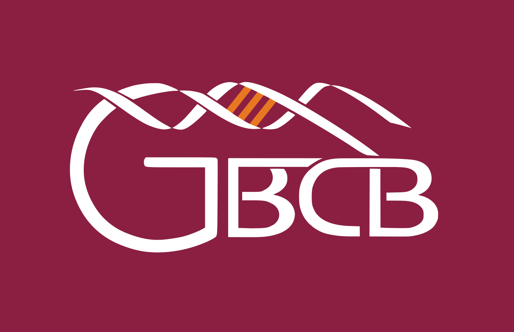
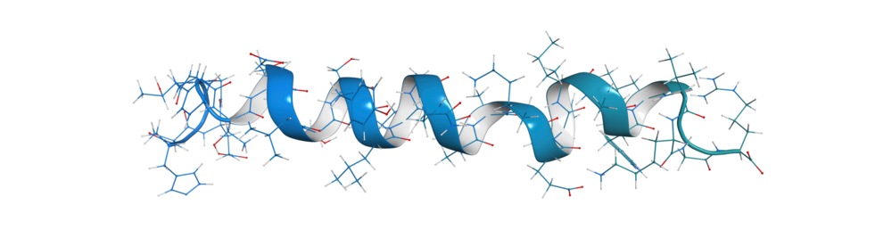
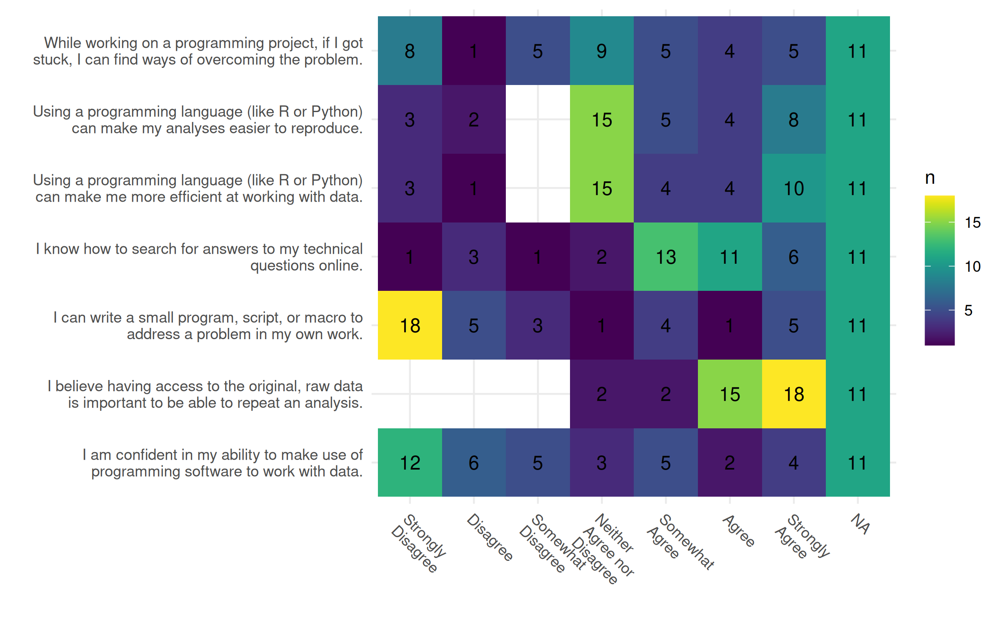
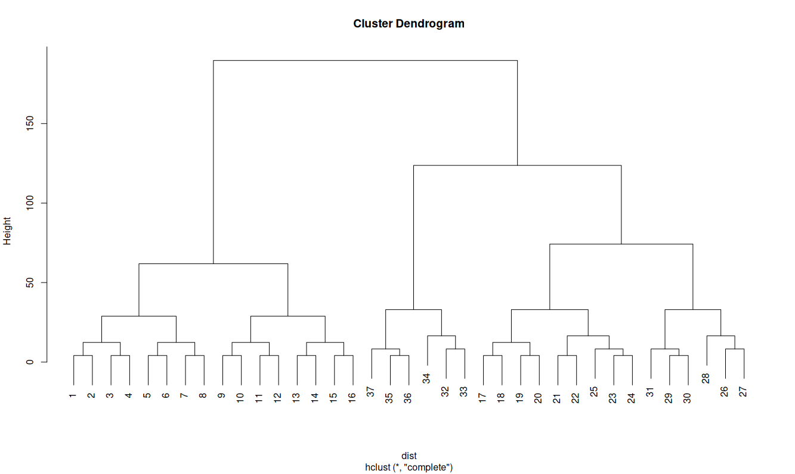
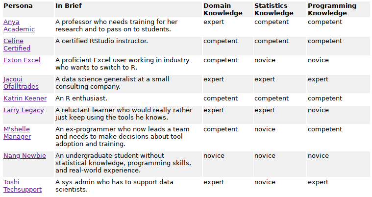

Chapter 13 Committee Meeting
13.1 2020-08-06
13.1.1 Introduction
- MPH in Epidemiology, Columbia University, 2014
- Thesis: Agent-based models
- Computational psychology: spread of ideas in a social network
- Took my first data science class
- Rachel Schutt, Kayur Patel, Jared Lander
- Software-Carpentry workshop attendee
- Adviser: Mark Orr, Columbia–> Virginia Tech (SDAL)
- Thesis: Agent-based models

- PhD Student in Genetics, Bioinformatics, and Computational Biology (GBCB)
- https://gbcb.graduateschool.vt.edu/
- Matriculated Spring 2015
- One of the Interdisciplinary Graduate Education Program (IGEP) by Dean Karen DePauw
- Program Director: Liwu Li, Biological Sciences
- Admissions Committee Chair: T. M. Murali, Computer Science & Applications
- Program Liaison: Dennie Munson, Interdisciplinary Graduate Programs
- She’s the best, if you need anything she can make it happen.
- Dissertation disruption
- Mark -> NDSSL; Dan student -> Faculty/Staff
- Worked as a data engineer
- On many projects, but none were dissertation specific
- Something to do with health care
- Most promising project: “Smart Scatter”
- Worked with Dave Higdon and Ian Crandall
- Worked as a data engineer
- Data Science for the Public Good (SDAL)
- Biocomplexity Institute VT -> UVA
- Mark -> NDSSL; Dan student -> Faculty/Staff


- Software-Carpentry
- Non-profit organization aimed to teach researchers the programming skills they need for research
- Co-founded by Greg Wilson
- Joined 2014
- Active instructor until 2017
- All my technical teaching experience was from the workshops I taught
- Software-Carpentry + Data Carpentry + Library Carpentry = The Carpentries

- Building off the Carpentries
- Authored “Pandas for Everyone”
- Pearson liveLessons
- Python and Git
- DataCamp classes (but we don’t talk about those)

- RStudio Intern Summer 2019
- RStudio Education team
- Worked on the {gradethis} package
- Code grader that can return formative error messages
- Made to be used with {learnr} interactive documents to create interactive lessons
- Gave a talk for Max Khun at the Non-clinical Biostatistics Conference (NCB)
- Got to TA Allison Hill’s {knitr} workshop at R/Medicine
- Met Peter Higgins (UMish) and Stephan Kadauke (CHOP)
- What am I good at and interested in
- Teaching technical computing
- Healthcare/medicine
- Andi Ogier, Director Data Services -> Anne Brown
- Anne Brown is a recent GBCB faculty member
13.1.1.1 Anne Brown
- Brown Experential Learning

- Bevan Brown Lab: https://bevanbrownlab.com/
DataBridge: https://www.databridge.dev/
Officially part of the Library
Affiliate in Biochemistry
Academy of Integrated Sciences
- https://www.ais.science.vt.edu/
- Majors: Computational Modeling and Data Analytics (CMDA), Nanoscience, and Systems Biology
- Minors: Data and Decisions, Integrated Science Curriculum, Science, Technology, & Law
David Bevan was her mentor and created the GBCB program
Expertise in conceptualizing pedagogical studies
Invested in Data Education
VT Libraries
- Commitment with/to the Carpentries
- Open@VT (https://blogs.lt.vt.edu/openvt/)
13.1.2 Deliverables


- Identify and create learner personas for the biomedical community
- Create a set of CC-0 lessons for the biomedical community
- Carpentries-inspired
- Carpenties Incubator: Data Science for Practicing Clinicians
- https://carpentries-incubator.github.io/Data-Science-for-Docs/
- Too much emphasis on Medical Doctors
13.1.3 Phases + research questions
- IRB 20-537: Data Science Workshops for Biomedical and Health Professionals: Persona Identification and Workshop Assessment
- Pre-workshop student self assessment survey to create learner personas
- Pre/post workshop survey to assess the workshop materials
- Long-term workshop survey (6 months out) to see if the materials helped with fundamental knowledge to learn more on their own
13.1.3.1 Research questions
3 main questions:
- Does the biomedical community have different types of learners? How will their needs differ in the creation of learning and training materials?
- Phase 1 questionnaire will go through validity and respondent clustering to identify personas
- Does having interactive feedback with informative error messages in formative and summative assessment questions improve the learner’s ability to learn and keep learning?
- Using tools like {learnr} with the {gradethis} and {pygradethis} library to create training materials.
- Pre/post workshop surveys can confirm existing knowledge along with results from the interactive questions in the workshop.
- Does tailored workshop materials help learners retain knowledge, use the tools, and continue self-learning?
- Combining all the surveys to determine “efficacy”
In more detail:
- Creating learner personas will create better educational content because they will be more tailored to the needs of the students.
- Learning how to program data analysis will allow learners to feel like they can do more with their data.
- Learning basic data literacy and data science skills can empower health/biomed workers and be more proactive in making more educated decisions.
- Workshops with an eye towards tidy data principles will better transition students out of a spreadsheet program into programming.
- Workshops will help medical professionals curate better data for research.
- Workshops will help medical professionals work with data outside of a spreadsheet program.
13.1.3.2 What is “effective”?
Learning objectives:
- Name the features of a tidy/clean dataset
- Transform data for analysis
- Identify when spreadsheets are useful
- Assess when a task should not be done in a spreadsheet software
- Break down data processing into smaller individual (and more manageable) steps
- Construct a plot and table for exploratory data analysis
- Build a data processing pipeline that can be used in multiple programs
- Calculate, interpret, and communicate an appropriate statistical analysis of the data
13.1.3.3 Samples
Snowball sample from relavant listservs on campus
- Dennie Munson – igep
- Taryn Luoma (taryn1@vtc.vt.edu) – fbri + iThriv
- Nathaniel Porter (ndporter@vt.edu) – swc tmbh students (n=3?)
- Andrea Green (greena15@exchange.vt.edu) vetmed
- Hannah Menefee (hmenefee@vt.edu) – mph
13.1.4 Preliminary results
13.1.4.1 1-way statistics
TODO INSERT FIGURES

- A LOT of Excel
- Very basic usage
- Do not use other specialized software for tasks, mainly just Excel
- No knowledge of “tidy data”
- Fundamental to processing and cleaning data
13.1.4.2 Personas

- Dendogram shows 3 or 5 groups
- Groups in sequential order is suspicious
- Seems to be from when the surveys were sent out to the listservs
13.1.4.3 Creating Personas
- Through the Eyes of Faculty: Using Personas as a Tool for Learner-Centered Professional Development
- methods that combine hierarchical agglomerative cluster analysis with chi-square values or squared Euclidian distance values and complete or average linkage

- RStudio learner Personas

13.1.5 Paper topics
- Learner Personas
- Feedback with informative error messages during a workshop
- Overall assessment of the workshop for “effectiveness”
13.1.6 Committee
Currently:
1. Anne Brown - Library
2. Alex Hanlan - Biostatistics
Need to re-confirm:
 3. Dave Higdon - Statistics
3. Dave Higdon - Statistics
Other people:
1. Dennis Kafura - Computer Science - Computer science education
2. Margaret Ellis - Computer Science - Digital education
3. Jane Robertson Evia - Statistics - Statistics education
4. Nikki Lewis - Honors College
5. Amy Nelson - History - Pedagogical Practices in Contemporary Contexts - Future Professoriate Certificate
13.1.7 Overall impact
- “Integrating scientific programming in communities of practice for students in life science”
- https://dl.acm.org/doi/10.1145/3332186.3333040
- People in the life sciences are afraid to take courses in CS and Stats
- Help augment the training from Center for Biostatistics and Health Data Science (CBHDS)
- Goal is not to teach statistics but the data literacy side of data science
- Managing and “cleaning” data
- Be able to better communicate with analysts and statisticians
- Carpentries-inspired training materials to help scale
- Have a CC-BY set of training materials that can be remixed by others
- VT has a core group of Carpentries certified instructors
- Anne is just about finishing up her checkout
- Build a community of practice
- “Building a local community of practice in scientific programming for life scientists”
- “If you build it, they will come…but then what? Facilitating communities of practice in R”